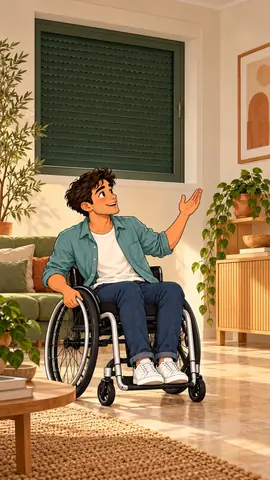
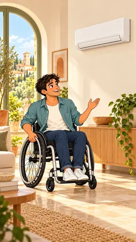
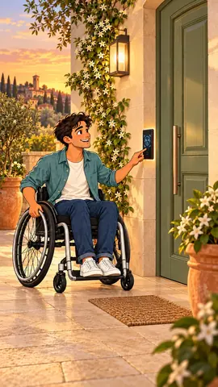
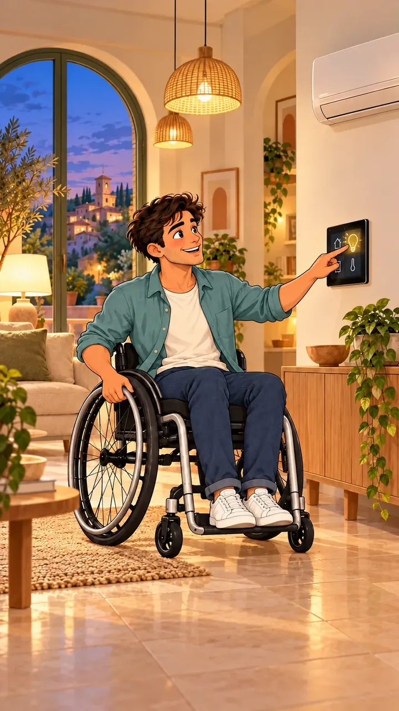
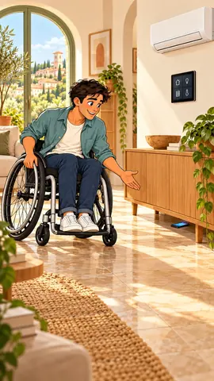
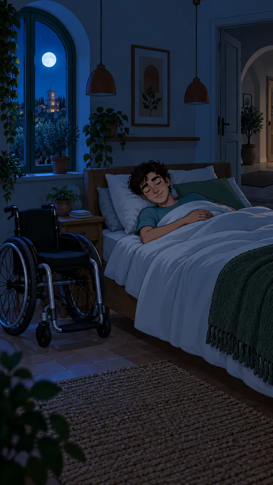

Più autonomiaNei gesti quotidiani
Sei esempi di automazioni per gestire accessi, clima, illuminazione e richieste di assistenza, con soluzioni configurate intorno alle esigenze della persona.
Tecnologia al servizio dell’autonomia.
Le clip mostrano come comandi e automazioni possono integrarsi nella vita quotidiana. Gli approfondimenti descrivono trigger, condizioni e azioni configurabili.
Gestire le tapparelle con un comando vocale.


Descrizione della clip 01
La persona chiede con la voce di alzare la tapparella. Il sistema riceve il comando, apre gradualmente la tapparella e conferma che è aperta.
Un comando vocale può avviare l’apertura o la chiusura delle tapparelle compatibili. La posizione finale, la gradualità e le frasi di attivazione si configurano in base all’impianto e alle preferenze personali.
- Parole sempliciAssociare richieste vocali chiare alle azioni utilizzate più spesso.
- Apertura gradualeImpostare posizioni predefinite o livelli di apertura graduali.
- Più modi di comandareIntegrare comandi vocali, pannelli e pulsanti compatibili.
Nella vita di tutti i giorniUn comando vocale avvia la tapparella; la posizione e la velocità di apertura seguono i parametri impostati.
Controllare il clima con la voce.

Descrizione della clip 02
La persona chiede di impostare il climatizzatore a 23 °C. Il sistema aggiorna la temperatura da 26 °C a 23 °C e attiva il climatizzatore.
Il controllo vocale può attivare il climatizzatore, modificare il setpoint o richiamare uno scenario. Le azioni dipendono dai dispositivi installati e dalle regole definite per gli ambienti.
- Accendere e spegnereInviare un comando di accensione o spegnimento al dispositivo integrato.
- Scegliere la temperaturaRegolare la temperatura e verificare il setpoint applicato.
- Comfort quotidianoCollegare il funzionamento a presenza, orari e preferenze individuali.
Nella vita di tutti i giorniLa richiesta vocale modifica il setpoint; la sovraimpressione mostra il valore aggiornato.
Un accesso digitale configurato per la persona.

Descrizione della clip 03
Il lettore rileva una persona davanti alla porta e verifica il volto. Dopo il riconoscimento di un utente autorizzato, sblocca la serratura e apre la porta.
Una serratura intelligente può integrarsi con un lettore di riconoscimento del volto e con un’apertura motorizzata compatibile. Posizione dei dispositivi, autorizzazioni e modalità di apertura vengono definite in base all’ingresso e alle necessità della persona.
- Lettore raggiungibileScegliere il lettore e collocarlo in una posizione funzionale all’uso quotidiano.
- Porta coordinataCoordinare il riconoscimento con lo sblocco della serratura e l’apertura motorizzata.
- Modalità alternativeAffiancare modalità alternative come app, pulsante o codice, secondo l’impianto.
Nella vita di tutti i giorniIl riconoscimento verifica l’identità autorizzata e avvia la sequenza di apertura della porta.
Un pannello per controllare tutta la casa.

Descrizione della clip 04
La persona seleziona l’icona della lampadina sul pannello domotico. Il comando spegne le luci del soggiorno e il pannello ne mostra lo stato aggiornato.
Un pannello centralizza il controllo di illuminazione, tapparelle, climatizzazione e accessi. La schermata può mostrare lo stato dei dispositivi, organizzare le funzioni per ambiente e richiamare scenari con un singolo comando.
- Controllo centralizzatoRiunire le funzioni principali in un’unica interfaccia.
- Comandi chiariOrganizzare i comandi per stanza e funzione, con indicatori di stato chiari.
- Scenari quotidianiAttivare scenari che coordinano luci, tapparelle e clima.
Nella vita di tutti i giorniToccando l’icona della lampadina, il pannello invia il comando e aggiorna lo stato delle luci del soggiorno.
Avviare una chiamata con un comando vocale.

Descrizione della clip 05
Il telefono è caduto sotto un mobile. La persona chiede con la voce di chiamare il contatto di aiuto; il sistema avvia la chiamata e conferma il collegamento.
Un comando vocale o un pulsante configurato può avviare una chiamata o inviare un avviso a un contatto scelto. La conferma dell’invio e lo stato della chiamata possono essere restituiti tramite i dispositivi collegati.
- Un comando concordatoAssociare una frase o un comando dedicato alla richiesta di contatto.
- Contatti scelti da teScegliere destinatari e canale di notifica, secondo i servizi disponibili.
- Conferma chiaraConfermare l’avvio e consentire l’annullamento della richiesta.
Nella vita di tutti i giorniIl telefono è caduto sotto il mobile: resta tranquillo e dice “Chiama il mio contatto di aiuto”. È una chiamata al contatto configurato, non un invio automatico ai soccorsi.
Coordinare le luci con il riposo.

Descrizione della clip 06
È sera. I sensori rilevano che il corridoio è vuoto e, dopo l’intervallo configurato, il sistema spegne le luci di corridoio e soggiorno.
Dopo l’attivazione dello scenario notte, i sensori possono spegnere le luci degli ambienti vuoti al termine dell’intervallo impostato. La camera può mantenere un’illuminazione ridotta, mentre le altre stanze seguono regole dedicate.
- Spegnimenti automaticiSpegnere gli ambienti comuni quando i sensori non rilevano presenza.
- Un percorso notturnoPrevedere un livello luminoso tenue per gli spostamenti notturni.
- Scelte personaliImpostare tempi, livelli e ambienti in base alle preferenze individuali.
Nella vita di tutti i giorniQuando il sensore conferma l’assenza nel corridoio, le luci si spengono; l’illuminazione della camera resta al livello notturno impostato.
Guarda anche

Una casa che funziona
come serve a te.
Raccontami gli ambienti, le abitudini e le automazioni che vorresti. Partiamo dalle tue esigenze.